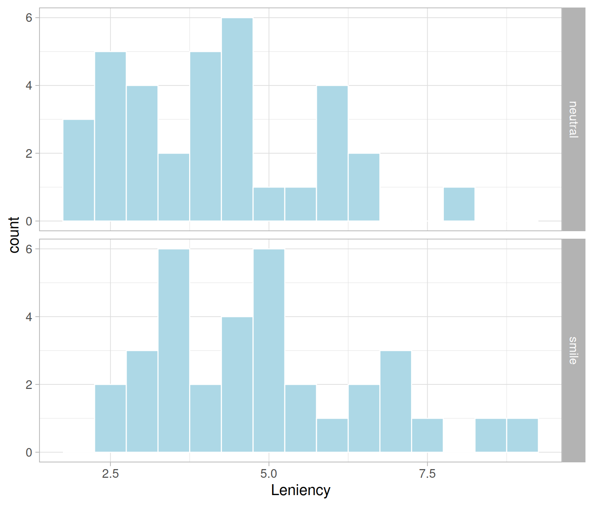
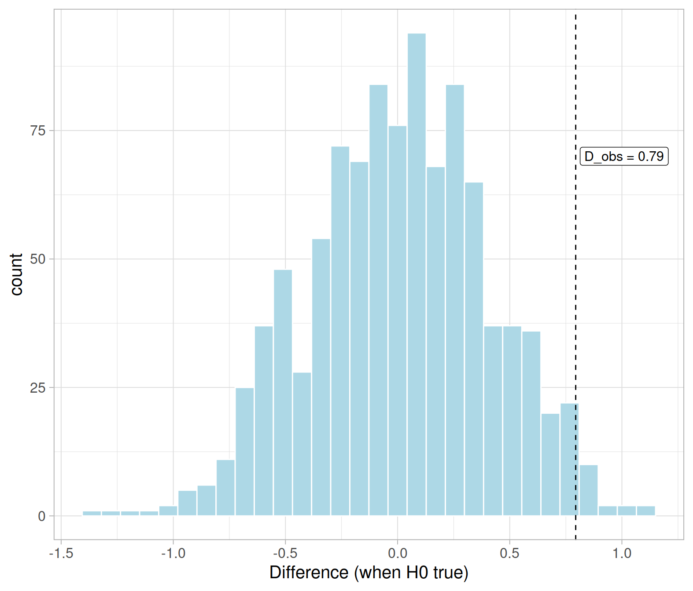
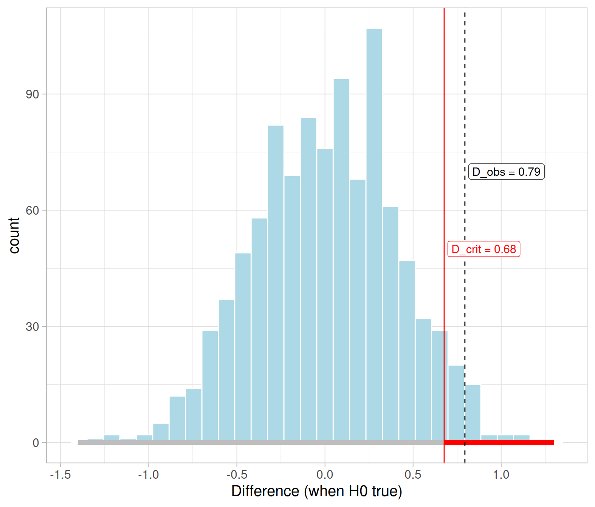
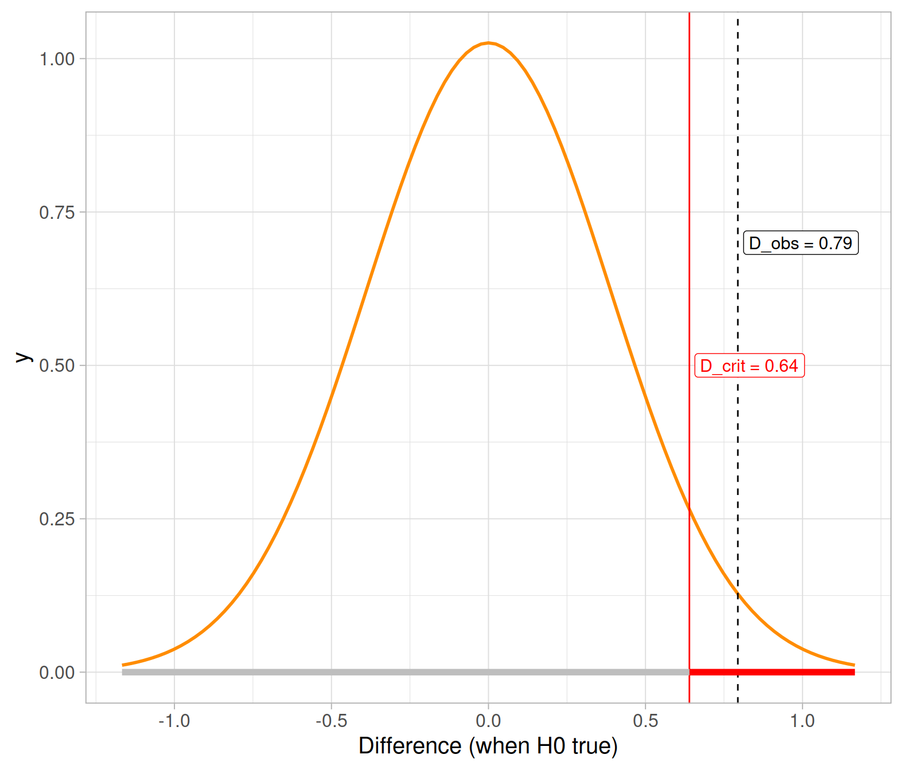
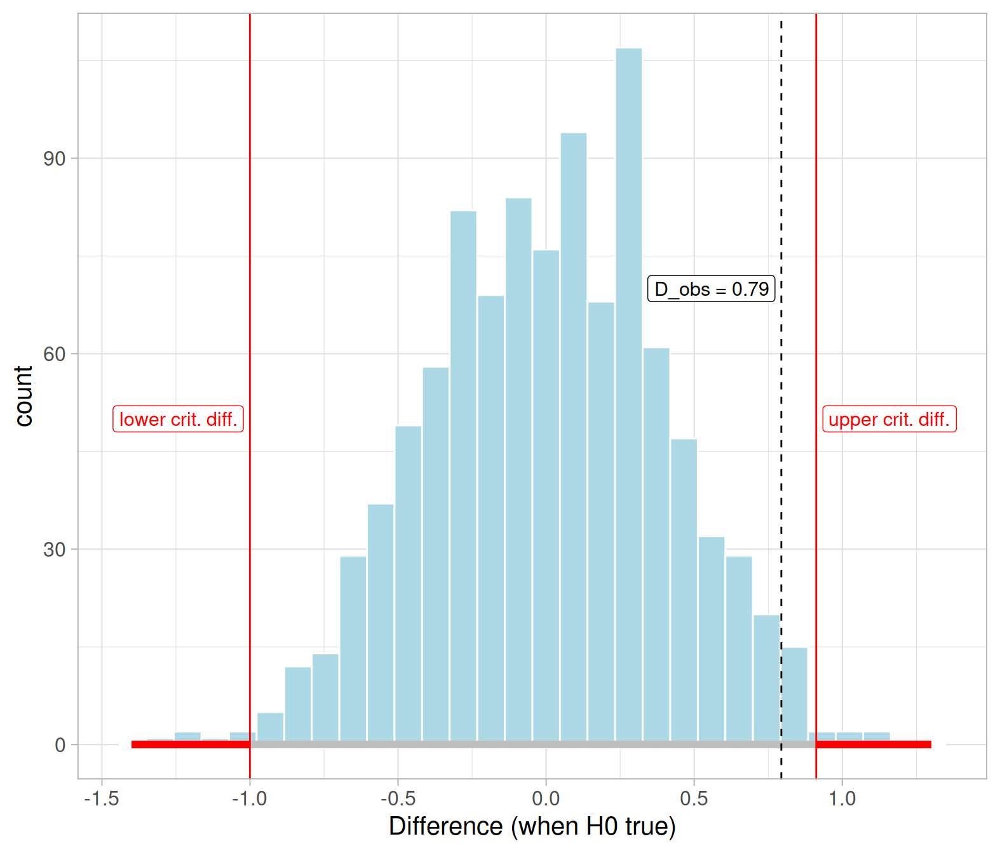

This week we will still be using the same data as last week, to see a direct comparison between the conclusions we reached using the p-value approach with the conclusions we will reach using the critical values approach.
Recall that the research question was:
Can a simple smile have an effect on punishment assigned following an infraction?
Analysing the data using a threshold of \(\alpha = 0.05\), last week we concluded that:
At a 5% significance level, we tested whether the mean leniency score for smiling students is higher than for students with a neutral expression. The p-value of the test (\(p = 0.029\)) indicates that if smiling truly had no effect on leniency scores, the chance of getting a difference in mean leniency scores between smiling and neutral students as high as 0.79 is 0.029, or 3 in 100 times. The sample data provide strong evidence against the null hypothesis that smiling had no effect on leniency and in favour of the alternative.
This week we will perform the same test of hypothesis, shown again below, but using the equivalent method of comparing the observed statistic with critical values. \[ H_0 : \mu_s - \mu_n = 0 \\ H_1 : \mu_s - \mu_n > 0 \]
Critical values
The critical values corresponding to a significance level of \(\alpha\) are the boundaries which delimit the regions leading to the rejection of the null hypothesis.
When the observed statistic is more extreme than the critical value, we reject the null hypothesis as such statistic would have a chance smaller than \(\alpha\) of occurring when \(H_0\) is true.
The 95% critical value when \(H_1 : \mu > 0\) is found as the 95th percentile.
The 95% critical values when \(H_1 : \mu \neq 0\) are two and are found as the 2.5th and 97.5th percentiles. The left critical value has a probability of 0.025 to its left, and the upper critical value has a probability of 0.025 to its right, which both sum to the desired 0.05.
First, we read the data into R and inspect the top six rows:
library(tidyverse)
smiles <- read_csv('https://uoepsy.github.io/data/Smiles.csv')
dim(smiles)## [1] 68 2We have 68 participants in the study and 2 variables. Let’s look at them:
head(smiles)## # A tibble: 6 x 2
## Leniency Group
## <dbl> <chr>
## 1 7 smile
## 2 3 smile
## 3 6 smile
## 4 4.5 smile
## 5 3.5 smile
## 6 4 smileGroup is a categorical variable encoding which type of picture the panel was shown, either neutral or with a smile. It should be a factor:
smiles$Group <- as.factor(smiles$Group)
head(smiles)## # A tibble: 6 x 2
## Leniency Group
## <dbl> <fct>
## 1 7 smile
## 2 3 smile
## 3 6 smile
## 4 4.5 smile
## 5 3.5 smile
## 6 4 smileLet’s investigate the distribution of the original sample:
ggplot(smiles, aes(x = Leniency)) +
geom_histogram(color = 'white', fill = 'lightblue', binwidth = 0.5) +
facet_grid(Group ~ .)
Before continuing, let’s compute the observed statistic in the sample:
stats <- smiles %>%
group_by(Group) %>%
summarise(Count = n(),
M = mean(Leniency),
SD = sd(Leniency))
stats## # A tibble: 2 x 4
## Group Count M SD
## <fct> <int> <dbl> <dbl>
## 1 neutral 34 4.12 1.52
## 2 smile 34 4.91 1.68Define
The observed statistic which estimates the population difference in means is: \[ \bar x_s - \bar x_n = 0.79 \]
The following code stores it in R:
D_obs <- diff(stats$M)
D_obs## [1] 0.7941176The null distribution shows the possible values of a statistic for many samples from a population in which the null hypothesis is true.
First, we need to load the rep_randomize function:
source("https://uoepsy.github.io/files/rep_randomize.R")For reproducibility, I will fix the random number generator seed, so that when I run again the entire file from start to finish I will get the same results.
set.seed(368)Next, I will generate 1000 randomization samples. Each of such samples will be of size \(n = 68\) in which the group assignment has been shuffled.
rand_samples <- rep_randomize(smiles, columns = 'Group', samples = 1000)
rand_samples## # A tibble: 68,000 x 3
## sample Leniency Group
## <dbl> <dbl> <fct>
## 1 1 7 neutral
## 2 1 3 neutral
## 3 1 6 neutral
## 4 1 4.5 smile
## 5 1 3.5 smile
## 6 1 4 neutral
## 7 1 3 smile
## 8 1 3 smile
## 9 1 3.5 smile
## 10 1 4.5 smile
## # … with 67,990 more rowsThe table above has 1,000 * 68 = 68,000 rows.
Then, for each randomization sample, we need to compute the difference in mean leniency score for the smiling and non-smiling students.
null_dist <- rand_samples %>%
group_by(sample, Group) %>%
summarise(M = mean(Leniency)) %>%
group_by(sample) %>%
summarise(D = diff(M))
null_dist## # A tibble: 1,000 x 2
## sample D
## <dbl> <dbl>
## 1 1 -0.0588
## 2 2 -0.265
## 3 3 0.0294
## 4 4 -0.265
## 5 5 -0.0882
## 6 6 -0.0294
## 7 7 -0.265
## 8 8 0.235
## 9 9 -0.235
## 10 10 0.294
## # … with 990 more rowsWe can visualise the null distribution of the difference in means and see where the observed difference falls in the distribution:
ggplot(null_dist, aes(x = D)) +
geom_histogram(color = 'white', fill = 'lightblue') +
geom_vline(xintercept = D_obs, color = 'black', linetype = 2) +
annotate(geom = "label", x = D_obs, y = 70, label = 'D_obs = 0.79',
hjust = -0.05, size = 4, color = 'black', fill = 'white') +
labs(x = "Difference (when H0 true)")
In the code above, linetype = 2 tells R to use a dashed line. Possible other values are 1 = solid line, 3 = dotted, 4 = dash-dotted line.
Don’t worry about annotate yet. It is used to make a pretty annotation at x = 0.79 and height y = 70 to not interfere with the rest of the graph (you can pick any other height you wish). The text to write is provided in label, while size controls the font size, color the colour, and fill the label fill colour. The argument hjust is the horizontal adjustment of the text, and can range from 0 to 1.
We now need to divide the x-axis (Differences when H0 is true) into two intervals:
First, we need to specify the significance level, i.e. the proportion of statistics from the null distribution we don’t mind sacrificing and saying H0 is false (even if they came from H0) because they are sufficiently extreme.
Today, we will use \(\alpha = 0.05\), as statistics that only occur 5 in 100 times under the null are rare enough for this application.
Next, we need to find the critical difference that cuts an area of 0.95 to its left and 0.05 to its right:
D_crit <- quantile(null_dist$D, probs = 0.95)
D_crit## 95%
## 0.6764706The critical difference, i.e. the 95th quantile of the null distribution, divides the possible values for the differences into two intervals
The following code displays the rejection region as a red horizontal line and the non-rejection region as a grey horizontal line:
ggplot(null_dist, aes(x = D)) +
geom_histogram(color = 'white', fill = 'lightblue') +
geom_segment(aes(x = D_crit, xend = 1.3, y = 0, yend = 0),
color = 'red', size = 2) +
geom_segment(aes(x = -1.4, xend = D_crit, y = 0, yend = 0),
color = 'gray', size = 2) +
geom_vline(xintercept = D_obs, color = 'black', linetype = 2) +
geom_vline(xintercept = D_crit, color = 'red') +
annotate(geom = "label", x = D_obs, y = 70, label = 'D_obs = 0.79',
size = 4, color = 'black', fill = 'white', hjust = -0.05) +
annotate(geom = "label", x = D_crit, y = 50, label = 'D_crit = 0.68',
size = 4, color = 'red', fill = 'white', hjust = -0.05) +
labs(x = "Difference (when H0 true)")
You see highlighted in red on the horizontal axis the differences that are more extreme than the critical value, and if the observed difference falls into that red region (the rejection region) our conclusion would be to reject the null hypothesis.
The grey region, instead, denotes the non-rejection region. If your observed difference falls into this grey part, you wouldn’t reject the null.
In our case,
At the 5% significance level, we tested whether smiling leads, on average, to more leniency compared to non-smiling. The observed difference in leniency means for smiling and non-smiling students is 0.79, which is larger than the critical difference 0.68 cutting a probability of 0.05 to its right. Hence, the sample difference in leniency means provides evidence against the null and in favour of the hypothesis that smiling does, on average, increase leniency and result in milder punishments.
We know from theory that the difference in means, when there is no difference in the population in mean leniency scores between smiling and non-smiling (i.e. when \(H_0 : \mu_s - \mu_n = 0\) is true), is \[ \bar X_s - \bar X_n \sim N(0, SE), \qquad \qquad SE = \sqrt{\frac{s_s^2}{n_s} + \frac{s_n^2}{n_n}} \] where \(s_s\) and \(s_n\) are the standard deviation of leniency for smiling and non-smiling students, respectively, in the original data.
Recall that we already computed the summary statistics for our data:
stats## # A tibble: 2 x 4
## Group Count M SD
## <fct> <int> <dbl> <dbl>
## 1 neutral 34 4.12 1.52
## 2 smile 34 4.91 1.68mu_theory <- 0
se_theory <- sqrt(stats$SD[1]^2 / stats$Count[1] + stats$SD[2]^2 / stats$Count[2])
se_theory## [1] 0.38898Let’s compare this with the standard error computed before via randomization, which was 0.4. As we can see they nicely agree!
We now need to find the critical value that cuts a probability of 0.95 to its left (and 0.05 to its right):
D_crit_theory <- qnorm(p = 0.95, mean = mu_theory, sd = se_theory)
D_crit_theory## [1] 0.6398152Is the observed difference in means larger than the critical difference?
D_obs >= D_crit_theory## [1] TRUEThis shows how the theory-based approach would lead to the same conclusion. At the 5% significance level, you would reject the null hypothesis.
Let’s also visualise this:

Imagine now the scenario where the researchers have no prior beliefs about the effect of smiling on leniency scores, and they are testing to see if facial expression has any effect (it could either increase or decrease leniency scores if a disciplinary panel will view smiling as arrogant and disrespectful).
State what the null and alternative hypothesis would have been in this scenario.
Conduct a test of hypothesis at the \(\alpha = 0.01\) significance level using the critical value method.
Hints
Remember, you can reuse the null distribution we created above!
Find the correct quantiles
Check whether the observed difference falls in the non-rejection region

Theoretical approach
You could perform the two-sided test of hypothesis above without the need for any resampling. To do so, you just need to original sample data and the theoretical formula, which is recalled below for convenience:
\[ \text{When }H_0\text{ is true:} \qquad \bar X_s - \bar X_n \sim N(0, SE), \qquad SE = \sqrt{\frac{s_s^2}{n_s} + \frac{s_n^2}{n_n}} \]
Conduct a test of hypothesis for the two-sided alternative using \(\alpha = 0.01\), the critical value approach, and resort to the theoretical distributions.
Theoretical approach: Standardization
We know that standardization makes data have a mean of 0 and standard deviation equal to 1. Furthermore we also know that for bell-shaped distributions, 95% of the values are between the mean - 1.96 * SD and the mean + 1.96 * SD.
For standardized variables, 95% of the values will be between -1.96 and 1.96, because mean = 0 and SD = 1.
\[ \text{When } H_0 \text{ is true:} \qquad \frac{(\bar X_s - \bar X_n) - 0}{SE} \sim N(0, 1) \] Using the standard normal distribution, check whether the observed difference falls into the rejection region of the distribution at the 5% significance level.
WARNING
Do not change the significance level throughout your analysis. These exercises are made for you to practice with multiple scenarios, but you should state and fix your significance level \(\alpha\) at the start of your research project and keep it the same throughout. Adjusting the significance level so that your results become significant is not good scientific practice.
Theoretical approach: Another view
We have seen before that \[ \text{When }H_0\text{ is true:} \qquad \bar X_s - \bar X_n \sim N(0, SE), \qquad SE = \sqrt{\frac{s_s^2}{n_s} + \frac{s_n^2}{n_n}} \]
We also know that for bell-shaped distributions such as the normal, 95% of the values are between the mean - 1.96 * SD and the mean + 1.96 * SD.
In this case, 95% of the sample differences will be between \(-1.96 \cdot SE\) and \(1.96 \cdot SE\).
If we allocate a 5% significance level to the tails of the distribution, -1.96 and 1.96 will be our critical values. So we would reject whenever the observed difference in means \(\bar x_s - \bar x_n\) is larger, in absolute value, than 1.96 * SE:
\[ \text{Reject }H_0\text{ if:} \qquad | \bar x_s - \bar x_n | \geq 1.96 \cdot SE \]
Use the following quick rule to see if it leads to the same conclusions reached previously.